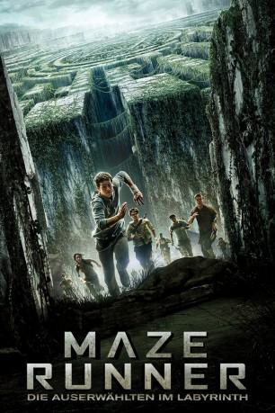

gesehen am 17.01.2016
gesehen am 17.01.2016Alternativ: The Maze Runner gesehen am 17.01.2016
 
 IMDB-Wertung: 6.8 / 10
IMDB-Wertung: 6.8 / 10  Metascore:
Metascore: 
Eines Tages wacht Thomas in einem Aufzug auf, aber das einzige, woran er sich erinnern kann, ist sein Vorname. Seine gesamten restlichen Erinnerungen sind verschwunden. Er stellt fest, dass er nicht allein ist: Als sich die Aufzugtür öffnet, strömen weitere Kinder auf ihn zu und begrüßen ihn. Der Ort, an dem er angekommen ist, nennt sich „die Lichtung“ und wird von einer großen Steinwand umschlossen. Genau wie Thomas wissen auch die anderen Kinder nicht, warum sie dort sind und wie sie dorthin gelangt sind. Sie wissen nur, dass sich jeden Tag große Türen in der Steinwand zu einem Irrgarten öffnen, der hinter den Mauern liegt. Nachts schließen sich die Türen wieder und alle 30 Tage wird ein neuer Jugendlicher mit dem Aufzug gebracht...
Jahr: 2014
Dauer: 113 Minuten
FSK: 12
Land: USA Studio: 20th Century FoxTonspuren:
Untertitel:
Auflösung: 1080p (1920x800) Größe: 4689 MB
Genre: Action, Mystery, Sci-Fi, Thriller
Regisseur: Wes Ball
Drehbuch: Noah Oppenheim, Grant Pierce Myers, T.S. Nowlin, James Dashner
Soundtrack: John Paesano
Darsteller:
 Dylan O'Brien als Thomas
Dylan O'Brien als Thomas Aml Ameen als Alby
Aml Ameen als Alby Ki Hong Lee als Minho
Ki Hong Lee als Minho Thomas Brodie-Sangster als Newt
Thomas Brodie-Sangster als Newt Will Poulter als Gally
Will Poulter als Gally Dexter Darden als Frypan
Dexter Darden als Frypan Kaya Scodelario als Teresa
Kaya Scodelario als Teresa Chris Sheffield als Ben
Chris Sheffield als Ben Alexander Flores als Winston
Alexander Flores als Winston Jacob Latimore als Jeff
Jacob Latimore als Jeff Patricia Clarkson als Ava Paige
Patricia Clarkson als Ava Paige Don McManus als Masked Man
Don McManus als Masked Man Bryce Romero als Jack
Bryce Romero als Jack Giovanni Silva als Lab Tech 7 , uncredited
Giovanni Silva als Lab Tech 7 , uncreditedDatei: X:\3-Trilogie(G-M)\Maze Runner\Maze Runner - Die Auserwählten im Labyrinth (2014, FSK12, 1920x800).mkv seit 02.02.2015
Festplatte: HD Collection-2(A-Z)-3(A-M)
 Alle Filme aus Gruppe '3-Trilogie(G-M)\Maze Runner'
Alle Filme aus Gruppe '3-Trilogie(G-M)\Maze Runner'